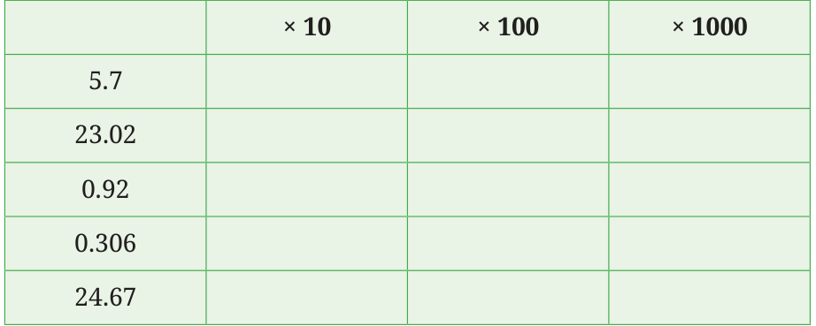

- Recall that a tenth is 0.1, a hundredth is 0.01, and so on. Find the following products in tenths, hundredths and so on:
- \(6 \times 4\) tenths \(= 24\) tenths
- \(7 \times 0.3\)
- \(9 \times 5\) hundredths
- Find the products:
- \(27.34 \times 6\)
- \(4.23 \times 3.7\)
- \(0.432 \times 0.23\)
- Thejus needs 1.65 m of cloth for a shirt. How many metres of cloth are needed for 3 shirts?
- Meenu bought 4 notebooks and 3 erasers. The cost of each book was ₹15.50 and each eraser was ₹2.75. How much did she spend in all?
- The thickness of a rupee coin is 1.45 mm. What is the total height of the cylinder formed by placing 36 rupee coins one over the other? Write the answer in centimeters.
- The price of 1 kg of oranges is ₹56.50. What is the price of 2.250 kg of oranges? Can we write 56.50 as 56.5 and 2.250 as 2.25 and multiply? Will we get the same product? Why?
- Dwarakanath purchases notebooks at a wholesale price of ₹23.6 per piece and sells each notebook at ₹30/-. How much profit does he make if he sells 50 books in a week?
- Given that \(18 \times 12 = 216\), find the products:
- \(18 \times 1.2\)
- \(18 \times 0.12\)
- \(1.8 \times 1.2\)
- \(0.18 \times 0.12\)
- \(0.018 \times 0.012\)
- \(1.8 \times 12\)
In which of the cases above is the product less than 1?
- In which of the following multiplications is the product less than 1? Can you find the answer without actually doing the multiplications?
- \(7 \times 0.6\)
- \(0.7 \times 0.6\)
- \(0.7 \times 6\)
- \(0.07 \times 0.06\)
- Multiplying the following numbers by 10, 100 and 1000 to complete the table.
